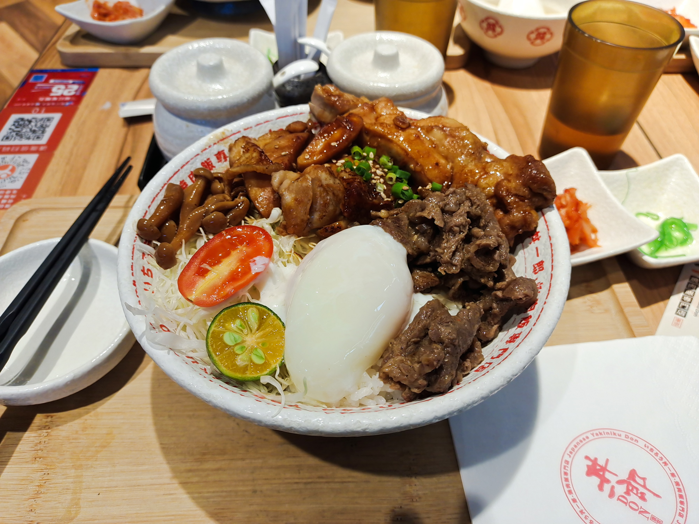
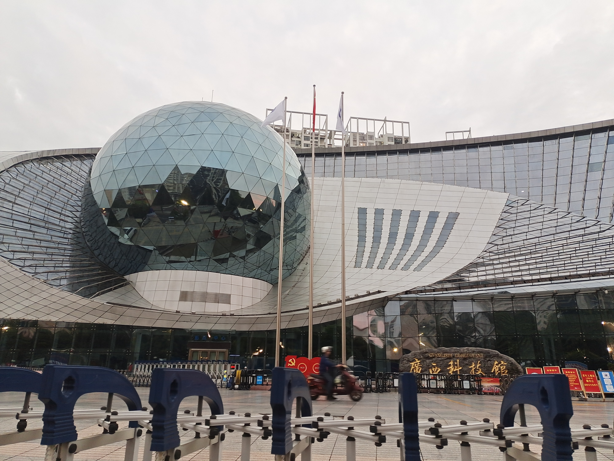

2021-广西“奇安信杯”历险记
前言
10月22-24号的学校出逃计划，本来以为是去参加ctf比赛结果到了现场发现不是ctf，而是真实靶机的渗透。新增了一个奇奇怪怪的经历——两天的出走、吃饭在十几个男生当中掺杂了一个女孩纸。现在想想还好没有背粉色书包去，不然就更突兀辽。
经过
两个半小时的高铁顺利到达南宁东站，坐上桂林没有的地铁前往南宁饭店，饭店好高级。但是不是我住的嘿嘿，因为我们队带了我一个女生不好订房间，所以我们和老师一起住在距离南宁饭店不远处的一个酒店，虽不比前者豪华，但也足够度过接下来的几天，酒店的镜子带了补光，照起来超级好看。为了不会显得太突兀，我特意穿了黑色的卫衣背了黑色的书包，跟大家一样了，嘻嘻嘻。到了酒店安置了行李（电脑）之后，就跟着大家一起去比赛的场地，但是没有进去，就大概熟悉一下去的路。然后就去吃饭辽，难以想象十五六个男生同时进入一家门店不大的店是什么场景，我怕店家觉得我们是来闹事的（笑死），晚饭吃的是温泉蛋饭，肉超级多，没有吃完剩了好大一块鸡排。

因为参赛队伍有数量限制，来参加比赛之前社团内部要选出参加比赛的人，组长问谁想去举手的时候，我毫不犹豫地就举手了，我知道虽然比赛不大，但是也很想去参加，就想在比赛场上看看自己能做得怎样，就算结果不尽人意，也只能证明自己的努力和付出还没有达到尽如人意的层次。虽然在这个理工科的学校里，信安专业的女孩子也不算少，但是真正去学这个的人好像不是太多，所以有时候也会害怕别人的目光和看法。但是我想学的话，我就一定好好学，厉不厉害的，看的都是个人能力。但是其实心里也还是特害怕的，音位最近事情也比较多，打题的时间几乎没有，22号晚上在酒店看了一会会的题。第二天去到比赛场地，也是一个超级豪华的酒店，场地布置就跟上次去护网差不多，开电脑，接网线，发了比赛规则，登录比赛的平台，比赛就开始了。
九点正式开始，拿到规则的纸和看着登录的网站，开始寻找CTF题目，结果发现不是ctf，比赛分为A区B区两个区，赛题分为可抢占式靶机和不可抢占式靶机还有两种，当然外加彩蛋题。我懵了，我本来是来打CTF的，而且渗透我也没有开始学，学长说有彩蛋来着，我就开始去找彩蛋，在A区的文档里找到了第一个彩蛋，十分。然后我就不知道要干啥了，因为我以为是真实网站的渗透，我还不会呢。最开始就是学长在打A去的一台可抢占式的靶机，结果刚占领就被别人打进来了，对打好多好多回，结果最后在那个靶机上也没得多少分。B区是好几个ip的网站，一开始我们都没想到要扫端口，结果就错过了好多时间，一个上午都是学长在A区打可抢占式靶机，一直跟别人争分，我就在旁边搜一下东西，找一下彩蛋的。结果到了中午，还是一直在打，终于意识到了要扫端口的事情，扫出来好些端口，一个个去看，学长打下了一个Jboss拿下了除了彩蛋分数外的100分，然后就扔给我一个未授权登录进去了的后台找flag。一开始我还以为那是个彩蛋，就一直翻文档看源码去找egg，找了好久，我还一直在想傍边的按钮也按不了，这页面看着就挺像静态界面的，但是找了好久还是没找到，我放弃这个思路了，去搜搜weblogic对应版本有什么漏洞。一开始找到了一个用GitHub上的exp执行的一个命令，但是尝试之后发现不太对，就重新去找了，翻到了一个远程命令执行的漏洞，版本对得上，后台界面也一样，我决定进行尝试。我才想到后台按钮有些按不了可能是因为使用的是未授权访问进入后台，用户的权限不足。然后照着文章进行抓包和数据包的构造，发现有回显并执行了输进去的命令。尝试执行查看flag的命令，得到了答案。
- 关于weblogic 12.1.3.0远程代码执行漏洞的手工化exp注入参考文章：
https://www.cnblogs.com/backlion/p/13951858.html
然后发现，B区的非抢占式靶机其实就是找到漏洞进行漏洞的复现，但是在复现的过程中会增设一些难度。然后我就跟着一起弄，扫端口，跟着去测站点，但是因为我们是从一点才开始打的B区，那个时候时间也没剩很多了，后面就又找了一个彩蛋，最后在找thinkphp的靶机的exp，但是没有复现出来，最后是拿了22名，只有一个优秀奖，还是挺惨的。比赛结束拍了大合照留念。
比赛结束路上的经过的广西科技馆

结
这种类型的靶机渗透其实我们没有很熟悉，因为平时写的练的也都是解题，但是感觉还挺好的吧。不足的点就是自己想的也没有很到位，对于端口仅仅是用nmap扫一下，没有尝试其他的方法和工具。给我的感觉是真实的靶机确实会比用ctf题目那样的出题形式要更吸引人一点，虽然我还是很菜，但是能来见识到相思湖学院的大哥就感觉也还挺不错的哈哈哈。座位的前面坐了第二名，后面坐的是第三名，真的感觉大哥们好厉害。也能印证学长说的，学现在这个东西就是靠时间和自己的付出堆出来的叭，大学的学习比高中而言我感觉学得更开心一点，因为是自己想学才会去学，没有为了高考而学，虽然这两者本质上好像都是一样的。
比赛结束后跟着老师一起去找约好的毕业学长学姐吃饭，吃饭的地方也好好看，在楼层都很高很高的闹市里隐藏的古风古气的院子，吃完之后去逛了沃尔玛，买了烤鸡和凉菜，吃了小伙伴买的超级好吃的炸鸭掌。第三天的归程前夕，天气依旧很好，吃完午饭我们就奔向火车站回桂林啦。
突然想起那个古风古气的小院子，没有想过会在那样的高楼边隐藏着如此安静的地方，就像这个喧嚣的世界，也一定有着一群为了网络安全而愿意沉淀自我、努力奋斗的少年吧。他们一定沉着冷静，不为嘈杂所扰，只愿奔赴向前。